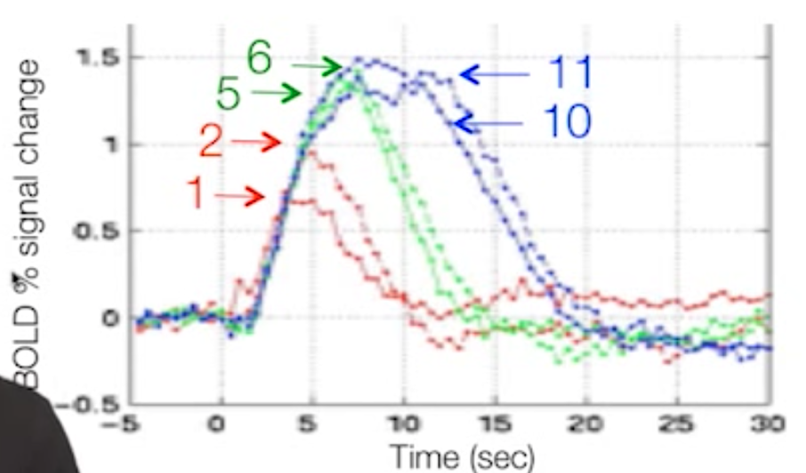

Video
Questions
HRF

Q. Does the peak at 5 second indicate the time of the highest neural activity? If so, how? If not, why not?
A. I don't think so. I believe the measured signal would have some delays in time to the time when neural activity actually happens. Also, the BOLD singal cannot always reflect neural activities.
Q. Suppose we choose a TR of 500ms. Roughly at which frame (e.g., 5th, 10th, 15th ...etc) may we observe the peak response?
A. Around 10th frame.
Flashing Checkerboard

This graph is used to illustrate multiple issues related to nonlinearity. See if you can identify specific patterns or features in the graph that illustrate the said issues.
Q. Where in the graph can we see that there is no linearity if two stimuli are closer that 5 seconds?
A. Every curve. For example, between curve 1 and 2. The response to 2 events are not twice as high as 1 event.
Q. Where in the graph can we there is non-linearity if two stimuli are more than 5 seconds apart?
A. Nope. No stimuli are more than 5 seconds in this graph.
Q. Where in the graph can we see the effect of saturation?
A. Every curve. None of the curve (excpet baseline curve 1) has reached the expected value.